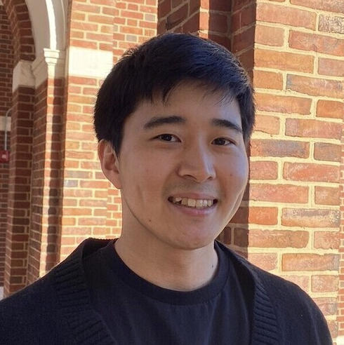

Ph.D. in Biomedical Engineering, Johns Hopkins University · Independent Research Fellow, KAIST
I develop algorithms and computational models to decode how genomes encode, regulate, and evolve biological function, from regulatory sequence grammar to the spatial organization of cells in disease.
Regenerative Medical Research Institute for Aging-related Diseases (reMRI)
Statistical Physics · Statistical Mechanics and Thermodynamics · Discrete Mathematics · Methods in Nucleic Acid Sequencing Lab · Biomedical Data Science
Interfacial physics of micro/nanosphere interactions at 2D oil-water interfaces, focusing on depletion interactions. Microscopy and numerical simulation.
Advisor: Michael A. Beer · Thesis: "Enhanced Algorithms to detect and characterize conserved regulatory sequences"
(* denotes co-first authors who contributed equally)
(•• papers highlighted as "of outstanding interest" in Curr. Opin. Genet. Dev.)
Johns Hopkins (2018–2024)
Lunit (2024–2026)
Johns Hopkins (2018–2024)
Lunit (2024–2026)